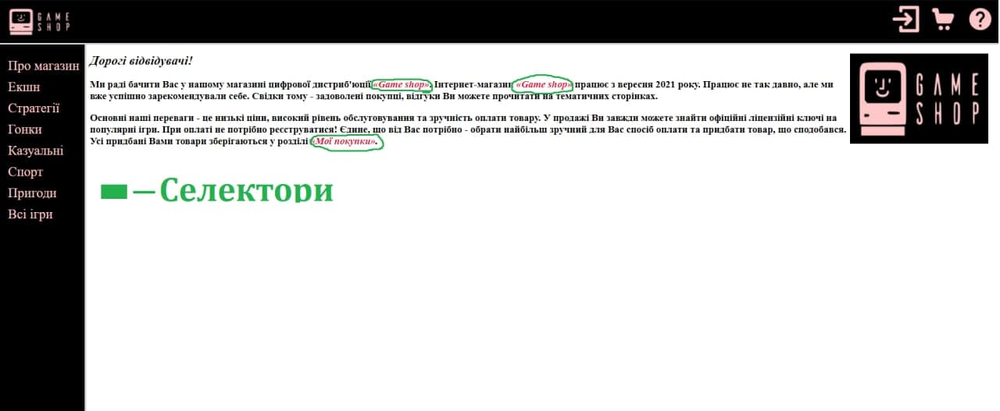

Селектори
Селектори CSS можуть мати в собі більше одного простого селектора. Між простими селекторами ми можемо написати:
- Нащадок селектора (пробіл).
- "Дитячий" селектора (>).
- Сусідній селектор(+).
- Загальний селектор(~).
Нащадок селектора (пробіл).
Охоплює всі елементи, які є потомками даного елементу. Синтаксис:
div p { background-color: yellow; }
"Дитячий" селектора (>).
Охоплює всі елементи, які є дочірнім даного елементу. Синтаксис:
div > p { background-color: yellow; }
Сусідній селектор(+).
Охоплює елемент, який стоїть відразу після обраного елементу.
Синтаксис:
div + p { background-color: yellow; }
Загальний селектор(~).
Охоплює всі елементи, які є наступними після елементу. Синтаксис:
div ~ p { background-color: yellow; }
Селектори в коді:
Скріншот
